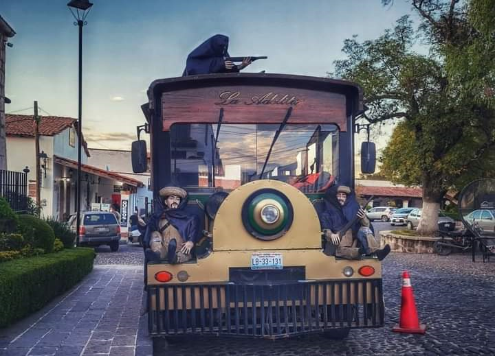
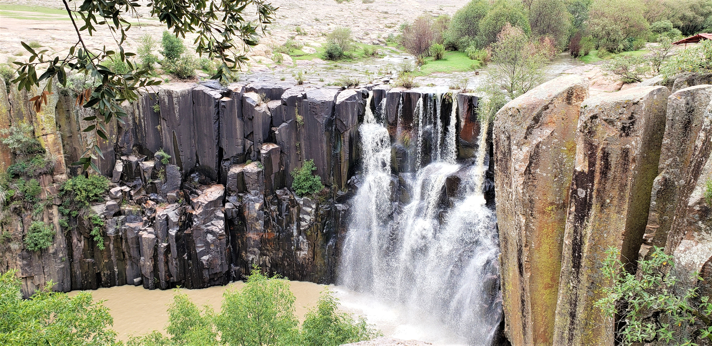

Aculco y sus Maravillas
Aculco que en Náhuatl significa "Donde el agua tuerce"
Adeldita
Volver al índice 

Ubicación 
Si tienes ganas de escaparte a un lugar con encanto, Aculco es el sitio indicado para ti. Se trata de uno de los pueblos mágicos del Estado de México. Aquí encontrarás distintos atractivos que harán cambiar tu forma de ver este estado. En él hallarás hermosas cascadas y otras maravillas, como el Bosque Bicentenario, que puedes conocer a bordo del tren La Adelita.
Cabe señalar que todos los recorridos a bordo de La Adelita, inician frente a la Presidencia Municipal. A continuación te compartimos algunas de las rutas y los puntos que abarcan:
- Recorrido por el Centro Histórico.
- Visita a la Calzada, a la Ceja y a la Hacienda Cofradía Chica.
- Parada en Estela y visita a un taller y tienda de artesanías hechas con cantera.
- Visita a la Cascada de la Concepción y a la del Tixhiñu así como al mirador de la zona otomí de San Joaquín.
- Parada en una panadería artesanal –este se lleva a cabo solo los sábados
Cascada Concepcion
Volver al índice 

Ubicación
Sobre la carretera Aculco-Amealco a 10 kilómetros de la cabecera municipal, en un paisaje rocoso resalta entre una barranca, una hermosa cascada que se nutre de las aguas de la presa de Ñado y corre sobre una calzada de columnas basálticas. En verano el caudal hace de la caída algo realmente impresionante, llega a alcanzar más de 25 metros de altura. Las paredes de basalto hacen de La Concepción el lugar perfecto para practicar rappel y el campismo.
Cascada Tixhiñu
Volver al índice 

Ubicación
Sobre la carretera panamericana existe una desviación donde se llega a la comunidad de San Joaquín, aquí existe una cascada llamada Tixhiñú, muy poco conocida por los habitantes del municipio y menos por los turistas. Con una caída de 15 mts. aproximadamente, puede aprovechar el día disfrutando de los alrededores, ya que al igual que la cascada de la Concepción, aquí también contamos con un cañón donde se pueden realizar actividades como acampar.
Peña Ñado
Volver al índice  >
>

Ubicación
En otomí significa “Cabeza de Piedra”, para llegar a este lugar lo puedes hacer a caballo, en bicicleta de montaña, en motocicletas para campo, en cuatrimotos, en vehículos 4X4 o bien disfrutar de una caminata, son aproximadamente 5 km. De brecha la cual disfrutaras en cualquier medio de transporte; Bosque Húmedo y una altura de 2900 msnm.
Puente Colgante
Volver al índice  >
>

Ubicación
Recuerdo viviente del año 1937 se ubica al fondo de la barranca de la comunidad de San Pedro Denxhi y fue construido para trasladarse a sus tierras de cultivo del otro lado de la barranca, territorio que ya pertenece al municipio de San Juan del Río, Querétaro.